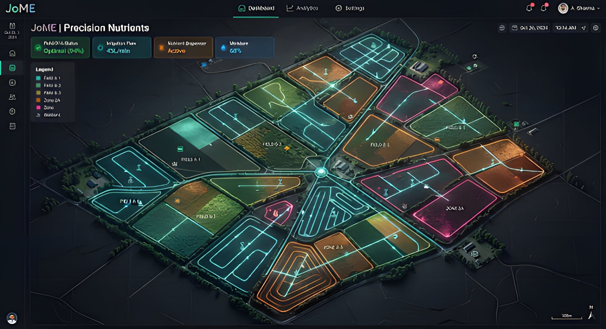
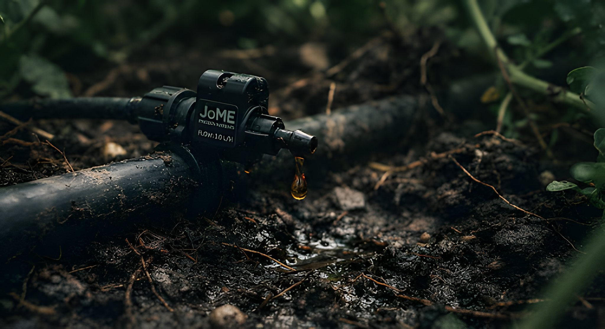
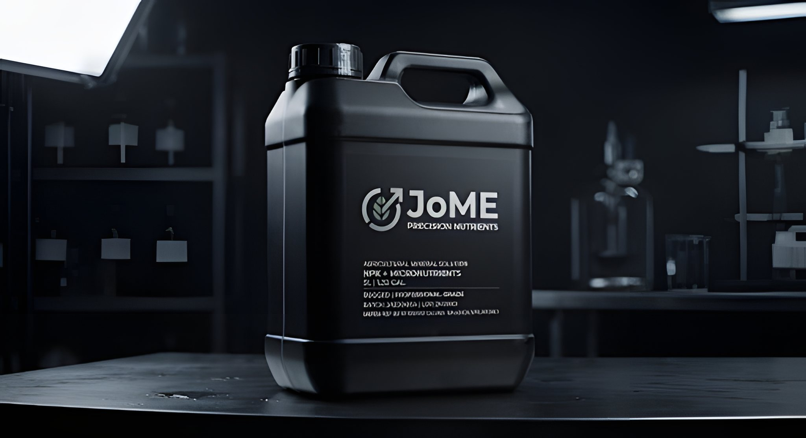

Crop-specific targeting
Different crops, one irrigation cycle.
The Smart Injector routes specific blends to distinct zones — giving tomatoes heavy potassium while providing cucumbers balanced nitrogen simultaneously.

JoME Smart Injector
An automated delivery system that injects liquid minerals precisely where and when they are needed. Cultivate healthier plants, optimize resource usage, and elevate your yield with intelligent stewardship.
01 — Intelligent nutrient delivery
Start feeding your soil with surgical precision based on real-time data.

Crop-specific targeting
The Smart Injector routes specific blends to distinct zones — giving tomatoes heavy potassium while providing cucumbers balanced nitrogen simultaneously.
Real-time mineral monitoring
Embedded soil sensors track nitrogen, phosphorus, and potassium levels, with high-contrast visualization of your soil's health.
Smart recommendation engine
AI-driven insights analyze soil state, weather patterns, and specific crop growth stages to autonomously suggest the optimal nutrient mix.
Optimal blend calculated

Maximize the hardware's potential with our exclusive line of high-performance, sediment-free liquid mineral blends designed for seamless injection and rapid root absorption.